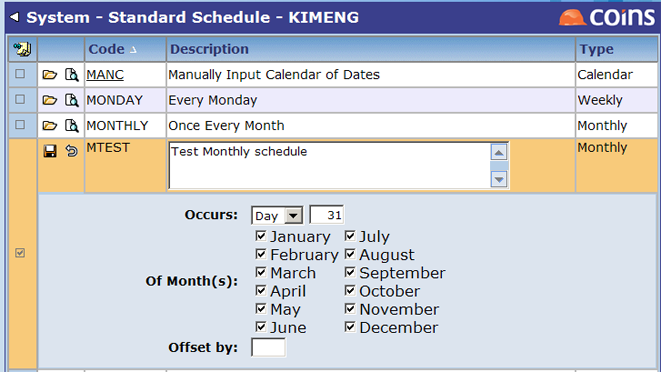
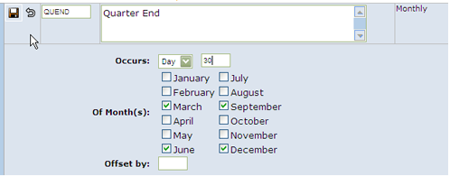

The repeat invoice feature makes use of the Report Scheduler in OA to control the frequency of invoicing. The examples in this How To guide uses 'MTEST' as the test schedule, as shown in the sample screen. Our example occurs the last day of every month.

You can set up other report schedules in Standard Schedules as needed. For example, to create a new Quarter-end standard schedule:
